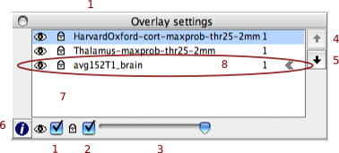

Organising the display with the Layer Tool
Each graphical view renders a combination of the stored
images according to the settings of that view's layer tool. You can
think of the view as being the result of observing a stack of overlaid layers
with different visibility, transparency, colour, etc., settings.
The top of the layer list (7) represents the uppermost layer
of the rendered stack. Rendering is evaluated from the bottom up so
layers higher up the list obscure those lower down.
- The "Visibilty" checkbox (1) toggles whether or not a given
layer is visible. You can also toggle this property by simply
double-clicking on the relevant layer in the layer list.
- Each layer can be locked using the "Lock"
checkbox (2). This property determines if a given
layer can be edited or not. By default freshly loaded layers
are locked, but new layers, those created with the "Create
Mask" menu option, are un-locked by default and can be
edited immediately.
- The "Transparency" slider (3)
determines how the selected layer blends with the layers
below it. A value of 1 makes any voxel
above threshold completely
obscure the same voxel in the layer below, while a value
of 0 means this image makes no contribution to the
rendered stack.
- The "Layer Up" (4), and
"Layer Down" (5), buttons move
the selected layer up or down the stack. Items lower
down are obscured by those higher up the stack.
- The "Info" button (6) calls
up the layer info dialog
where you can get a fuller description of an images
properties as well as modify some advanced options such
as the look up table to be used.
- The "Layer List" box (7) indicates the order in which
the layers will be evaluated along with visual feedback of that
layers display settings.
|

|
The layer marked with chevrons (8) to
the right of it is the "main layer". This layer is the first one
loaded during any given session and cannot be removed from the
list as much of the viewer's display capabilities are determined
from this layer's attributes.